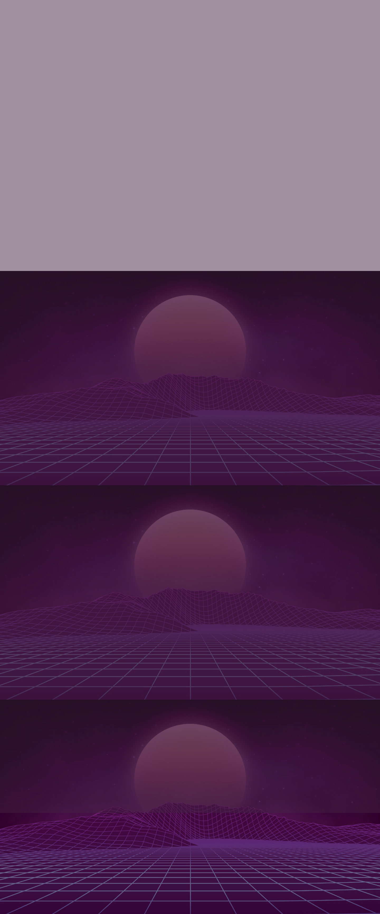
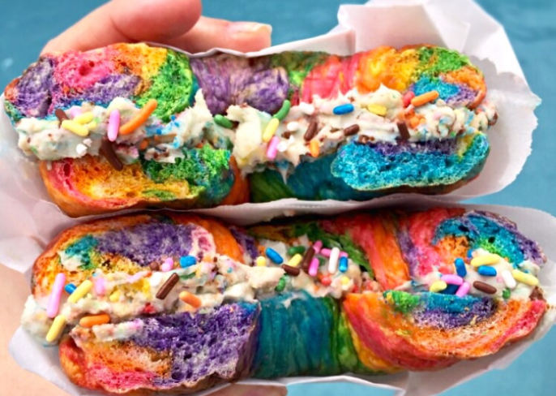
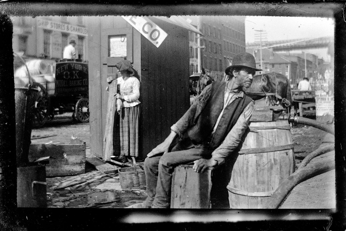

what to do in BROOKLYN

COIN LINE history

Welcome to Coin Line- A single day music festival in downtown Brooklyn, New York. Our lineup consists of
a mix of classic and beloved 80’s and 90’s bands, modern alternative rock, and electronic pop music. With
Brooklyn as our home, we welcome a diverse crowd with unique music tastes. Check out below to find out
more about the city and the numerous exciting things it has to offer!
If you are unfamiliar with the term “coin line,” it refers to the standard tradition of placing a coin on
an arcade machine to reserve your place in line. In 1982, a famous arcade in Brooklyn called “Barcade”
burnt down in an unfortunate fire. After being untouched for 5 years, founder Brian Marshall renovated the
remains of the building and transformed it into the Coin Line venue. Our building still retains several
features of the original arcade.
Best bars and restaurants: Grimm Artisanal ales, Long Island Bar, Mood Ring, Gage and Tollner, Agies
Counter
Museums: Brooklyn museum, MOFAD (Museum of Food and Drink), Williamsburg Art and
Historical Center